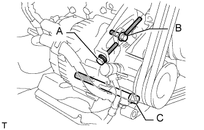
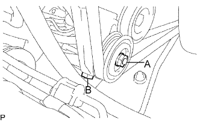
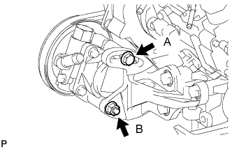

ПРИВОДНОЙ РЕМЕНЬ > УСТАНОВКА |
| 1. УСТАНОВИТЕ ПОЛИКЛИНОВОЙ РЕМЕНЬ ВЕНТИЛЯТОРА И ГЕНЕРАТОРА |
Установите поликлиновой ремень.
|  |
Отрегулируйте натяжение поликлинового ремня с помощью болта A.
Затяните болты B и C.
Проверьте натяжение поликлинового ремня (Нажмите здесь).
| 2. УСТАНОВИТЕ ПОЛИКЛИНОВОЙ РЕМЕНЬ КОМПРЕССОРА СИСТЕМЫ КОНДИЦИОНИРОВАНИЯ |
Установите поликлиновой ремень.
|  |
Отрегулируйте натяжение поликлинового ремня с помощью болта B.
Затяните гайку А.
Проверьте натяжение поликлинового ремня (Нажмите здесь).
| 3. УСТАНОВИТЕ ПОЛИКЛИНОВОЙ РЕМЕНЬ ЛОПАСТНОГО НАСОСА |
Установите поликлиновой ремень.
Отрегулируйте натяжение поликлинового ремня с помощью стержня.
|  |
Затяните болт А и гайку В.
Проверьте натяжение поликлинового ремня (Нажмите здесь).
| 4. УСТАНОВИТЕ КОРПУС ВОЗДУШНОГО ФИЛЬТРА В СБОРЕ |
Install the air cleaner case with the 3 bolts.
| 5. УСТАНОВИТЕ ФИЛЬТРУЮЩИЙ ЭЛЕМЕНТ ВОЗДУШНОГО ФИЛЬТРА В СБОРЕ |
| 6. УСТАНОВИТЕ РЕЗОНАТОР С КРЫШКОЙ ВОЗДУШНОГО ФИЛЬТРА В СБОРЕ |
Вставьте петли крышки воздушного фильтра и шланг в корпус воздушного фильтра, а затем закрепите 4 откидных защелки.
Установите крышку воздушного фильтра и закрепите ее зажимом.
Закрепите зажим жгута проводов.
Подсоедините 2 зажима и разъем.
| 7. УСТАНОВИТЕ УПЛОТНЕНИЕ ФАРТУКА ПРАВОГО ПЕРЕДНЕГО КРЫЛА |
Install the front fender apron seal with the 4 clips.
| 8. УСТАНОВИТЕ ЗАЩИТУ КАРТЕРА ДВИГАТЕЛЯ № 1 В СБОРЕ |
 |
Hook the engine under cover to the vehicle body as shown in the illustration.
Install the 4 bolts.
| 9. УСТАНОВИТЕ НИЖНЮЮ НАКЛАДКУ ПЕРЕДНЕГО БАМПЕРА |
Install the front bumper cover lower with the 5 bolts and clip.